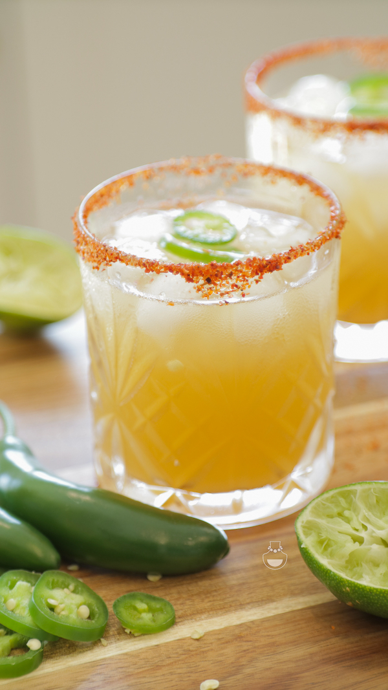

Skinny Spicy Margarita

Spicy, tangy and refreshing! This spicy skinny Margarita is guaranteed to get those
senses tingling. A twist on your regular margarita with the inclusion of orange juice,
habanero lime seasoning and sliced jalapenos. Agave syrup and tequila are a match made in heaven,
so be sure to use this sweetner if you really want to impress.
Prep Time: 5 mins Servings: 1
Ingredients:
- 1tsp chilli lime seasoning
- 1 lime wedge
- 6 jalapeno slices
- ice, as needed
- 50ml silver tequila
- 45ml lime juice, freshly squeezed
- 35ml orange juice, freshly squeezed
- 1tsp agave syrup, or to taste
Instructions:
- Pour Tajin onto a plate. Rub a lime wedge around the rim of a glass,
and dip the rim of the glass in Tajin.
- Place 3 jalapeno slices into a cocktail shaker and mash well with a cocktail muddler.
Add ice to the shaker. Pour in tequila, lime juice, orange juice, and agave syrup;
cover and shake until the outside of the shaker has frosted, about 30 seconds.
Strain into a chilled glass and garnish with remaining jalapeno slices. Serve immediately.